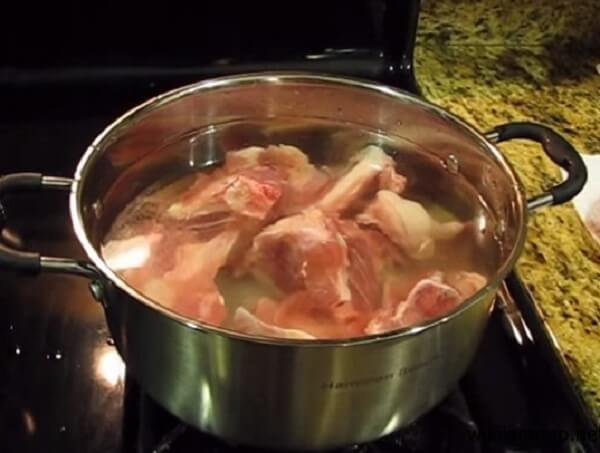

CÁCH LÀM LẨU HẢI SẢN TẠI NHÀ
Lẩu luôn là món ăn mang lại sự gắn kết tình cảm của mọi người với nhau.
Đặc biệt là vào nhẽng ngày mùa đông lạnh giá, còn gì tuyệt vời hơn khi được quây quần bên người thân và bạn bè với nồi lẩu nóng hổi lại cực kỳ hấp dẫn này.

Lẩu Hải Sản là một món ăn ngon rất đậm đà nhưng lại rất đơn giản trong việc nguyên liệu và cách chế biến
Nguyên Liệu:
- Tôm tươi: 300gram
- Mực tươi: 300 gram
- Ngao: 1kg
- Nấm: 300gram
- Xương ống: 1kg
- Thịt lợn: 500 gram
- Rau tổng hợp
- Các loại gia vị: hạt nêm, nước mắm, muối, sa tế...
- Hành, tỏi, xả, 3 quả cà chua, 1/2 quả dứa
- Bún: 1kg
- Xương ống: Rửa sạch, cho vào trần khoảng 1 phút với nước đã được đun sôi từ trước đó. Trần xong mang xương đi rửa lần 2 rồi cho vào nồi ninh làm nước dùng. Trong quá trình ninh, phải thường xuyên vớt bọt để nước được trong hơn. 
- Dứa Xanh: Gọt vỏ, bỏ mắt và cắt miếng; Cà chua rửa sạch bổ múi cau; me chua bào lấy nước cốt rồi bỏ bã; nấm hương ngâm nở sau đó cắt chân.
- Tôm: rửa sạch sau đó bỏ đất đen ở đầu, chỉ lưng và bụng; Bạn có thể bóc vỏ tôm hoặc giữ nguyên, chỉ cát bỏ râu.
- Ngao: ngâm trong nước vo gạo để nhả sạch cát rồi rửa lại; Nếu bạn không có nước vo gạo thì có thể cho ngao vào ngâm với một vài lát ớt để ngao nhanh mở miệng.
- Mực: Cắt bỏ túi mực, mắt mực sau đó làm sạch với chanh muối. Tiếp theo, bạn thái mực thành miếng vừa ăn.
- Rau, hành tỏi, cà chua,..: nhặt và rửa sach với nước, hong cho ráo nước
- Đập dập hành tỏi sau đó cho phi thơm vàng với một chút dầu ăn. Tiếp theo, bạn cho cà chua vào xào cho lên màu. Cà chua nhừ, bạn cho phần nước cốt me vào đun đến khi hơi sệt lại.
- Dùng muôi thủng vớt bỏ xương ống ra ngoài, chỉ giữ lại phần nước cốt. Thực hiện xong, bạn cho phần nước cà chua vừa xào vào nồi nước xương, nêm gia vị + sa tế cho vừa ăn.
- Cho vào nồi nước lẩu phần dứa xanh + ngấm hương rồi khuấy đều cho dậy mùi. Chắt phần nước lẩu ra nồi dùng để nhúng sau đó đun sôi nồi nước trở lại. Nước sôi, bạn cắt miếng đậu phụ và thả vào nồi.
- Bày phần tôm, ngao, mực, cá và phần rau nhúng lẩu ra đĩa. Khi nồi nước sôi trở lại, bạn nhúng lần lượt các nguyên liệu vào nồi nước dùng cho tới khi chín. Thưởng thức lẩu hải sản cùng với một chút tương ớt hoặc muối tiêu chanh sẽ rất hợp vị. Như vậy là chúng ta đã có môt nồi lẩu thơm ngon rồi.
Cách Làm
Bước 1: Sơ chế nguyên liệu
Bước 2: Làm nước nhúng lẩu:
Bước 3: Thưởng thức lẩu:
Cách làm món lẩu Hải Sản trên được thực hiện và tìm hiểu bởi cô Hạnh Hải, nếu còn gì thắc mắc cần giải dáp thì click vào Người hướng dẫn để biết thêm thông tin và chi biết chính xác nhất.
Ngoài ra, nếu bạn lười không muốn tự vào bếp nấu mà vẫn muốn có lẩu ngon để ăn thì xin giới thiệu thêm các nhà hàng lẩu nổi tiếng, ngon mà không lo về giá sau: